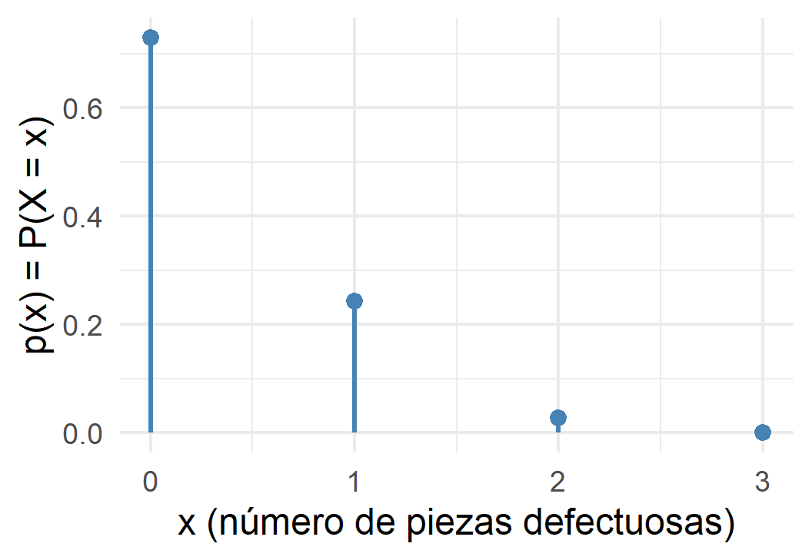
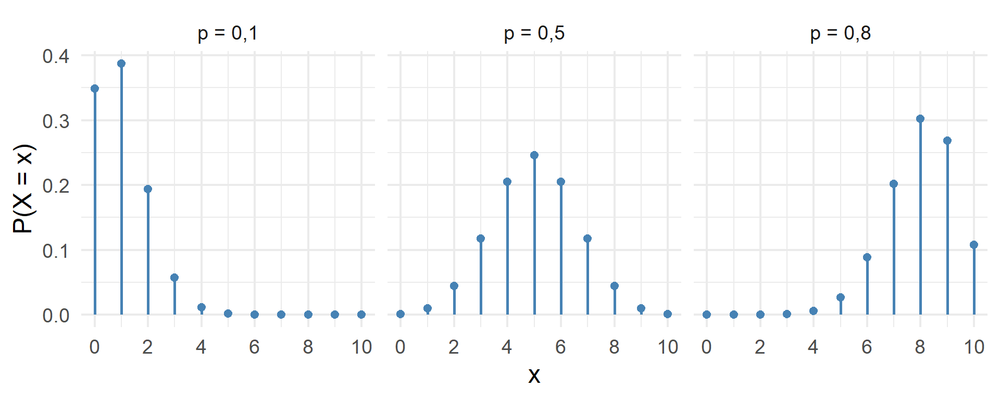
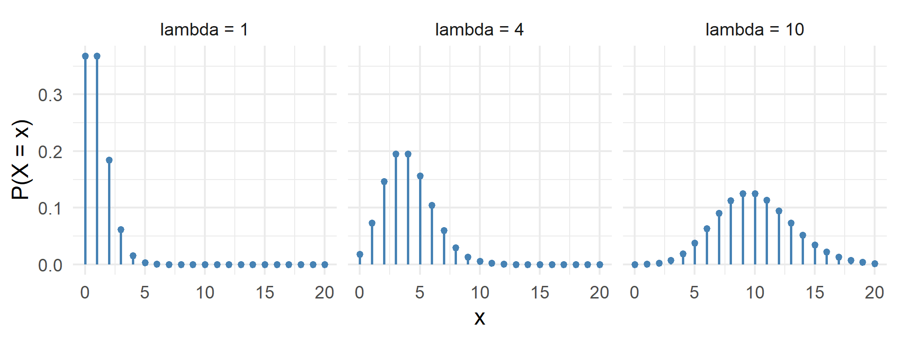
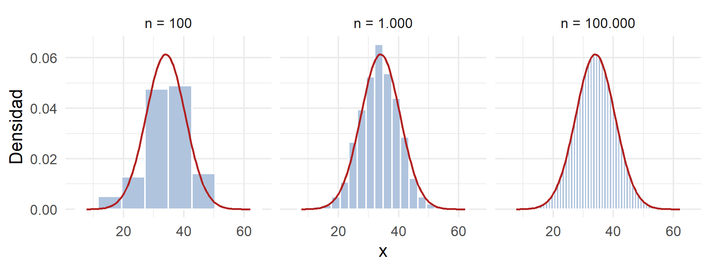
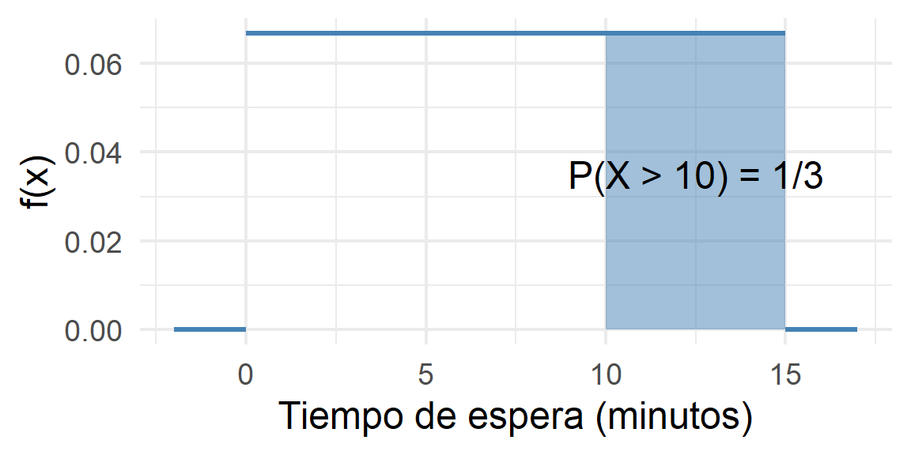
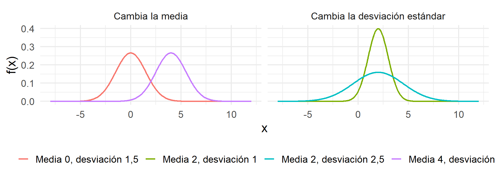
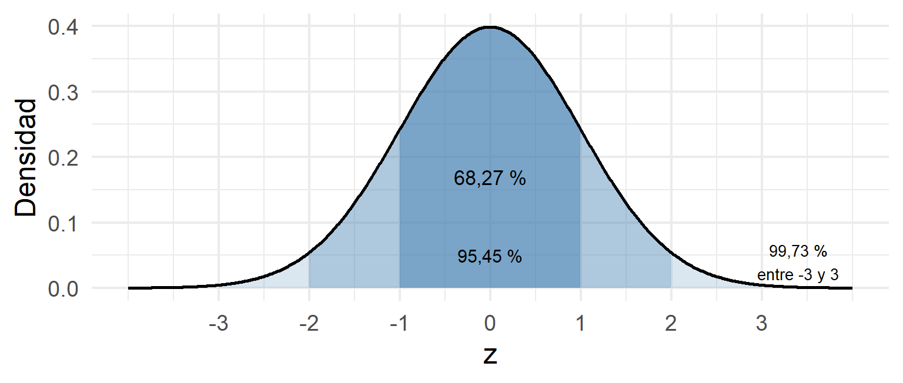
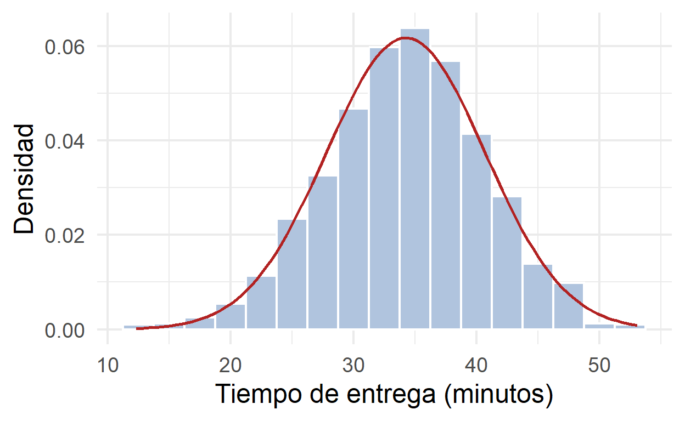
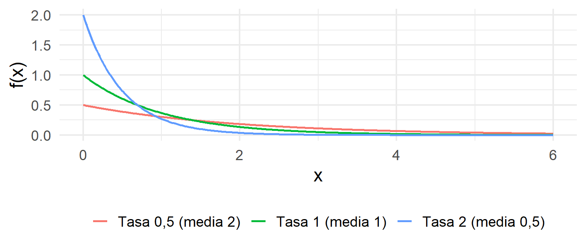

Estadística I
Escuela de Matemáticas · Universidad Industrial de Santander
Capítulo 1: datos observados
Capítulo 3: modelos de probabilidad
Un modelo describe cómo se comportaría una variable si pudiéramos observarla infinitas veces. Sus características son los parámetros que aprenderemos a estimar en Estadística II.
Una variable aleatoria asigna un número real a cada resultado del espacio muestral. Se denota con mayúscula (\(X\)); sus valores, con minúscula (\(x\)).
\(X\) = número de piezas defectuosas entre tres:
| Resultado | \(NNN\) | \(NND\) | \(NDN\) | \(DNN\) | \(NDD\) | \(DND\) | \(DDN\) | \(DDD\) |
|---|---|---|---|---|---|---|---|---|
| \(X\) | 0 | 1 | 1 | 1 | 2 | 2 | 2 | 3 |
Discreta: valores que se pueden enumerar; surge de contar.
Continua: cualquier valor en un intervalo; surge de medir.
\[ p(x) = P(X = x), \qquad p(x) \ge 0, \qquad \sum_{x} p(x) = 1 \]
Cada pieza es defectuosa con probabilidad 0,1, independientemente:
| \(x\) | \(p(x)\) | \(F(x)\) |
|---|---|---|
| 0 | 0,729 | 0,729 |
| 1 | 0,243 | 0,972 |
| 2 | 0,027 | 0,999 |
| 3 | 0,001 | 1 |

\[ F(x) = P(X \le x) = \sum_{t \le x} p(t) \qquad\qquad P(a < X \le b) = F(b) - F(a) \]
\[ \mu = E(X) = \sum_{x} x\, p(x) \]
\[ \sigma^2 = V(X) = \sum_{x} (x - \mu)^2 p(x) = E(X^2) - \mu^2 \]
En muchos grupos de tres piezas, se encuentran en promedio 0,3 defectuosas por grupo.
Póliza de vida a un año: cuesta 500 000 pesos. Si el asegurado fallece (probabilidad 0,002), se pagan 100 millones.
\[ E(G) = 500\,000 \times 0{,}998 + (-99\,500\,000) \times 0{,}002 = 300\,000 \]
En una póliza se puede perder mucho; en miles de pólizas, se ganan en promedio 300 000 pesos por cada una.
Propiedades: \(\quad E(aX + b) = a\,E(X) + b \qquad V(aX + b) = a^2\,V(X)\)
\(X\) = número de éxitos, \(\quad X \sim \text{Bin}(n, p)\): \[ P(X = x) = \binom{n}{x} p^x (1 - p)^{n - x}, \qquad x = 0, 1, \ldots, n \] \[ E(X) = np \qquad\qquad V(X) = np(1 - p) \]
¿Por qué \(\binom{n}{x}\)? Hay \({}_{n}C_{x}\) formas de ubicar los \(x\) éxitos.
5 % de piezas defectuosas; muestra de 10: \(X \sim \text{Bin}(10;\ 0{,}05)\).

Asimétrica a la derecha si \(p\) es pequeño, simétrica si \(p = 0{,}5\), asimétrica a la izquierda si \(p\) es grande.
Llamadas por minuto, accidentes por día, defectos por metro de tela…
\[ P(X = x) = \frac{e^{-\lambda} \lambda^x}{x!}, \qquad x = 0, 1, 2, \ldots \qquad\qquad E(X) = V(X) = \lambda \]
Central con 3 llamadas por minuto en promedio, \(X \sim \text{Poisson}(3)\):

La ley de los eventos raros
Si \(n\) es grande y \(p\) pequeño: \(\text{Bin}(n, p) \approx \text{Poisson}(np)\). \(\text{Bin}(1000;\ 0{,}002)\): \(P(X \le 1) = 0{,}4057\); Poisson(2): \(0{,}4060\).
Población de \(N\) elementos con \(K\) éxitos; muestra de \(n\) sin reemplazo. \(X \sim \text{Hip}(N, K, n)\):
\[ P(X = x) = \frac{\binom{K}{x}\binom{N - K}{n - x}}{\binom{N}{n}} \qquad E(X) = np, \quad V(X) = np(1 - p)\frac{N - n}{N - 1}, \quad p = \frac{K}{N} \]
Lote de 20 piezas con 4 defectuosas, se eligen 3: \(\text{Hip}(20, 4, 3)\)
| \(x\) | 0 | 1 | 2 | 3 |
|---|---|---|---|---|
| \(P(X = x)\) | 0,491 | 0,421 | 0,084 | 0,004 |
| Distribución | Cuenta | \(E(X)\) | \(V(X)\) | R |
|---|---|---|---|---|
| \(\text{Bin}(n, p)\) | Éxitos en \(n\) ensayos | \(np\) | \(np(1-p)\) | binom |
| \(\text{Poisson}(\lambda)\) | Ocurrencias en un intervalo | \(\lambda\) | \(\lambda\) | pois |
| \(\text{Hip}(N, K, n)\) | Éxitos sin reemplazo | \(np\) | \(np(1-p)\frac{N-n}{N-1}\) | hyper |

La curva límite es la función de densidad \(f(x)\).
Consecuencia
\(P(X = a) = 0\): el área sobre un punto es cero. Por eso, en variables continuas, “menos de” y “como máximo” dan lo mismo.
\[ F(x) = \int_{-\infty}^{x} f(t)\,dt \qquad \mu = \int x\,f(x)\,dx \qquad \sigma^2 = \int (x - \mu)^2 f(x)\,dx \]
\(X \sim U(a, b)\): \(\quad f(x) = \dfrac{1}{b - a}\), \(\quad E(X) = \dfrac{a + b}{2}\), \(\quad V(X) = \dfrac{(b - a)^2}{12}\)
Un bus pasa cada 15 minutos: espera \(X \sim U(0, 15)\).

\(X \sim N(\mu, \sigma^2)\): \[ f(x) = \frac{1}{\sigma\sqrt{2\pi}}\; e^{-\frac{1}{2}\left(\frac{x - \mu}{\sigma}\right)^2} \]

Campana simétrica: media = mediana = moda \(= \mu\).
\[ Z = \frac{X - \mu}{\sigma} \sim N(0, 1) \qquad\qquad P(X \le x) = \Phi\!\left(\frac{x - \mu}{\sigma}\right) \]
\(z\) = a cuántas desviaciones estándar está \(x\) de la media.

La regla empírica del capítulo 1, demostrada: 68-95-99,7.
Puntajes \(X \sim N(250,\ 50^2)\).
| \(\Phi(z)\) | 0,90 | 0,95 | 0,975 | 0,99 | 0,995 |
|---|---|---|---|---|---|
| \(z\) | 1,282 | 1,645 | 1,960 | 2,326 | 2,576 |

Normal con \(\bar{x} = 34{,}23\) y \(s = 6{,}46\):
| Datos | Normal | |
|---|---|---|
| \(\le 30\) min | 0,250 | 0,256 |
| \(> 40\) min | 0,180 | 0,186 |
El modelo funciona muy bien.
\(X \sim \text{Exp}(\lambda)\): \[ f(x) = \lambda e^{-\lambda x}, \quad x \ge 0 \qquad F(x) = 1 - e^{-\lambda x} \qquad E(X) = \frac{1}{\lambda}, \quad V(X) = \frac{1}{\lambda^2} \]

Vida útil con media 1000 horas (\(\lambda = 1/1000\)):
Relación con la Poisson: 3 llamadas por minuto → tiempo entre llamadas \(\text{Exp}(3)\), media 20 segundos.
\(P(\text{esperar más de 1 minuto}) = e^{-3} = P(\text{ninguna llamada en 1 minuto})\)
\[ P(X > s + t \mid X > s) = P(X > t) \]
Un componente que ya funcionó \(s\) horas tiene la misma probabilidad de durar \(t\) horas más que uno nuevo: “no envejece”.
Buen modelo para fallas accidentales (componentes electrónicos), no para piezas que se desgastan.
| Prefijo | Calcula |
|---|---|
d |
\(p(x)\) o \(f(x)\) |
p |
\(P(X \le q)\) |
q |
cuantiles |
r |
simulación |
| Distribución | R |
|---|---|
| Binomial | binom |
| Poisson | pois |
| Hipergeométrica | hyper |
| Uniforme | unif |
| Normal | norm |
| Exponencial | exp |
Cuidado
pnorm(x, mean, sd) recibe la desviación estándar, no la varianza. Cola derecha: lower.tail = FALSE.
[1] 0.2231302[1] 0.3333333[1] 203 215 223 288 343Las funciones r serán la base del capítulo 4: distribuciones muestrales.
Estadística I · UIS